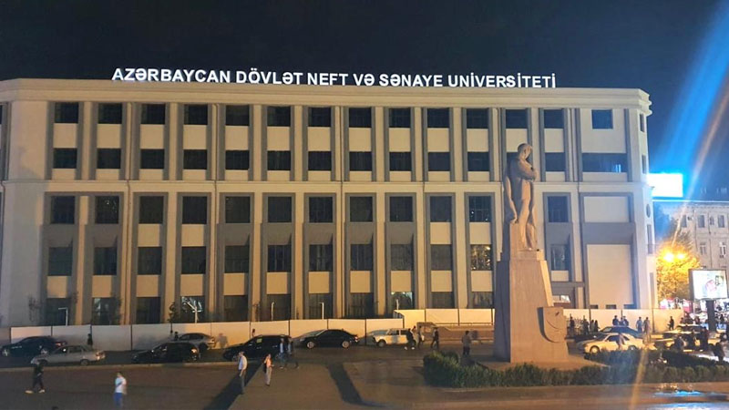

Tarixi Universitetin tarixi 1887-ci ildən başlayır. 10 noyabr 1887-ci ildə Bakı şəhər duması tərəfindən Bakıda texniki məktəbin yaradılması haqqında qərar çıxarılmışdır. 1896-cı ildə texniki məktəb "Bakı aşağı səviyyəli texniki məktəbə" çevrilmişdir. 1896–1905-ci illər ərzində bu məktəbin mexanika şöbəsi üzrə 50 nəfər, inşaat şöbəsi üzrə isə 55 nəfər buraxılışı olmuşdur. 1910-cu ildə mexanika şöbəsinə neft-texniki və elektromexanika istiqamətlər daxil idi. 1916-cı ildə məktəbdə 494 tələbə təhsil alırdı ki, onlardan da 20 nəfəri azərbaycanlı idi. 1918-ci ildə məktəb politexnikum adlandırılmışdır. Politexnikumda neft sənayesi, elektromexanika və inşaat–memarlıq şöbələri fəaliyyət göstərmiş, tələbələrin sayı 188 nəfər olmuşdur. Bu dövrdə Azərbaycanda, aralarında 12 mühəndis olan cəmi 62 nəfər azərbaycanlının ali təhsili olmuşdur.
